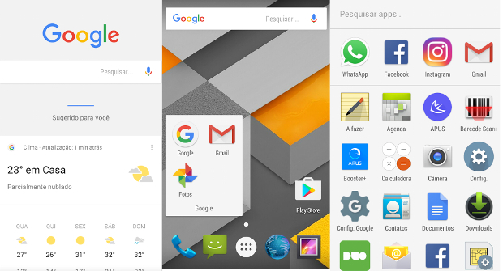

Android: aplicativos permitem personalizar a aparência da tela inicial e melhorar o desempenho do aparelho
Postado em 13 de Março 2017
O sistema operacional Android é conhecido pela sua versatilidade e costumeiramente exaltado pelos entusiastas devido às inúmeras vantagens de poder fazer ajustes conforme a necessidade. Porém, modificar o sistema é uma tarefa que requer conhecimentos avançados em informática, além de oferecer riscos a integridade do dispositivo. Isso não significa que os usuários que apenas querem se divertir e tirar o máximo proveito do seu smartphone, também não possam personalizar a aparência do seu dispositivo com o Android. Nessa coluna serão apresentados os melhores aplicativos que são carregados durante a inicialização do sistema melhoram a experiência de uso do aparelho.
O que é um launcher?
São aplicativos que modificam a aparência da tela inicial do dispositivo. Além de permitir a instalação de temas personalizados para melhorar a apresentação, esse tipo de app oferece funcionalidades adicionais para tornar mais eficiente o uso Android. Alguns deles permitem gerenciar a execução de outros aplicativos, e dessa maneira garantir o máximo de desempenho mesmo estando habilitado intermitentemente. Mas nem todos os smartphones permitem a instalação de launchers, é preciso que a versão do Android seja a 4.1 ou superior. Alguns fabricantes desenvolvem o seu próprio lançador e adicionam diversos aplicativos proprietários. Essa prática nem sempre é aprovada pelos usuários mais conservadores, que sempre que for possível irão preferir o sistema operacional com a menor quantidade de alterações. Confira os aplicativos testados e indicados para turbinar o smartphone.Google Now Launcher
É o aplicativo oficial da Google, completamente integrado com o Google Maps, Gmail, Photos. O seu ponto forte está na versatilidade do uso dos comandos de voz. Ele possui um visual simples, porém bem apresentado que lembra as versões 'puras' do Android distribuídas na linha Nexus de smartphones e tablets. O lançador é gratuito e está disponível na Google Play. Postado por Emilly GabrieleLINE Moments
Postado em 13 de Março 2017LINE Moments é um concorrente direto do Instagram no mercado asiático. O serviço é uma rede social para vídeos de até 10 segundos ou GIFs que são reproduzidos em loop. Seu diferencial é que o conteúdo criado na plataforma pode ser compartilhado em qualquer lugar e não é preciso uma conta para ver as imagens de outros usuários postadas publicamente.
Christmas Free Live Wallpaper
Christmas Free Live Wallpaper é um papel de parede animado com a temática natalina. O aplicativo dá uma ajudinha para deixar o seu celular preparado pro período das festas de final de ano. Afinal, é bom trazer um pouco da energia da época para o smartphone, não é?Soldiers Inc: Mobile Warfare
Soldiers Inc: Mobile Warfare é um jogo MMO ambientado na guerra. Aqui o seu objetivo é treinar seu próprio exército para que ele se transforme em tropas especializadas que devem batalhar para proteger seu território. Conquiste postos avançados lotados de recursos e junte-se a amigos para assumir controle total do campo de batalha!Hill Climb Racing 2
Hill Climb Racing 2 é a segunda versão do game de corrida mobile mais emblemático que já habitou smartphones modernos. O título original era difícil para caramba e se tornou uma verdadeira febre entre os jogadores que curtem títulos mais desafiadores. Agora, além do modo “Aventura”, que é o mesmo que tínhamos no jogo anterior, você tem as “Copas” para disputar. Postado por Emilly GabrieleDieta Dukan
Postado em 13 de Março 2017Dieta Dukan é uma ferramenta que quer ajudar você a perder peso. Esse app ajuda você controlar o desenvolvimento do seu peso, das suas medidas e também da sua atividade física. Todos os dias, é possível marcar esses dados no app sem perder muito tempo, e ainda verificar o que você deve comer naquela fase da dieta.